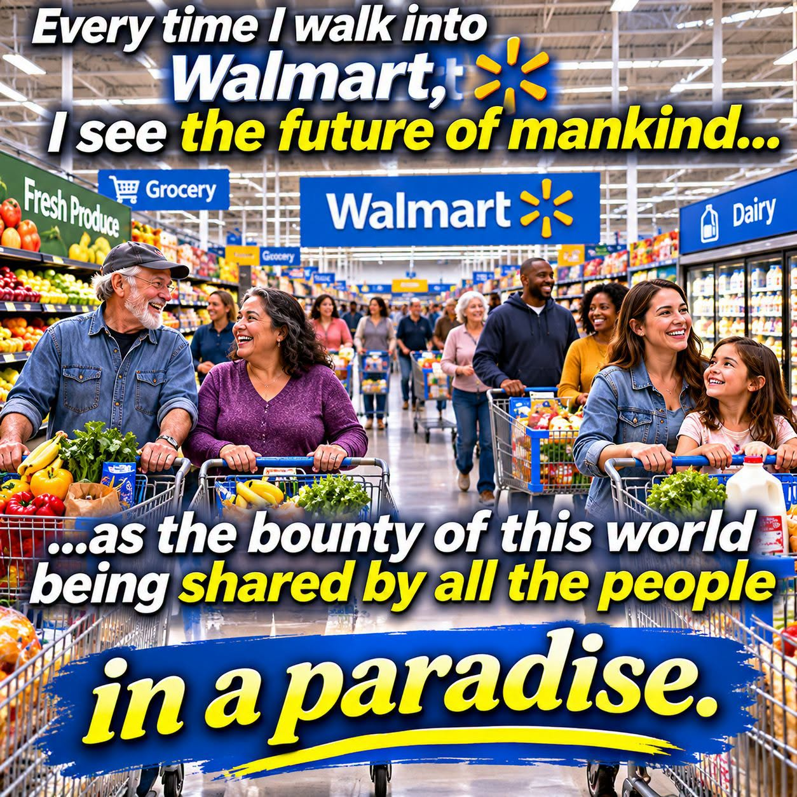

ARTICLE #003 · November 2026 · Willis Butts
Abundance Is Already Here. The Missing Ingredient Is Access.

An imagined future of shared abundance, illustrated through a familiar supermarket setting.
The abundance we walk past every day
Every time I walk into a large supermarket, I see more than shelves of groceries. I see the remarkable productive capacity of humanity. Fresh vegetables arrive from farms, bread from bakeries, household goods from factories, and necessities from supply chains spanning continents. A modern store is a monument to what people can accomplish together. Yet outside those same doors, families struggle to afford dinner. That contrast should make us ask a different question: Is the fundamental problem that we cannot produce enough, or that too many people cannot reach what we produce?
A price tag is not the same as a shortage
Money is the gatekeeper in most of our distribution systems. A product can be physically present, perfectly useful, and urgently needed—and still remain inaccessible to the person standing in front of it. The shelf is full, but the wallet is empty. The food exists; access does not. That is the paradox at the center of my vision for Terra Nova Development: abundance can coexist with deprivation when purchasing power determines who receives essential goods.
Money is a tool, not the purpose
Money helps coordinate labor, investment, transport, and production. It is not inherently evil, and simply abolishing prices would not create unlimited supplies. But when money becomes an absolute condition for receiving food, basic clothing, or a safe place to rest, it can become a barrier between people and necessities already within reach. We should design additional ways to distribute essentials—ways that measure success in people served, goods reused, waste avoided, and lives stabilized rather than sales alone.
What access could look like
Imagine a network of Community Havens operating alongside ordinary stores. Local supermarkets, farms, restaurants, manufacturers, and residents could donate safe surplus food and useful goods. Haven workers and volunteers would sort, store, refrigerate, repair, and distribute those items at no charge to visitors. Community gardens, shared kitchens, and partnerships with local producers could supplement donations. A parent could obtain groceries without shame. Someone starting a job could find appropriate clothes. A neighbor could give away a working appliance instead of leaving it unused in a garage. The goal is not to take from those who have, but to connect willing contributions and existing resources with unmet needs.
From isolated charity to coordinated abundance
Generosity already exists. Food banks, mutual-aid networks, community fridges, shelters, and donation centers prove that people are willing to share. What is missing is often coordination at the scale of the problem. A stronger system could link supply and demand across neighborhoods, publish clear safety and handling standards, support reliable transportation, and make participation easy for businesses and households. Digital tools and AI could help forecast demand, route donations, reduce spoilage, and identify gaps—while keeping human dignity and privacy at the center.
Access must be built responsibly
A functioning access-based system still needs resources. Refrigeration costs money. Workers deserve fair pay. Buildings require maintenance. Food safety, accessibility, sanitation, inventory controls, and protection against exploitation matter. Some goods are genuinely scarce, and communities need fair ways to allocate them. Public funding, philanthropy, voluntary donations, and local partnerships could support a network of Havens. Pilot projects should measure what they actually accomplish: meals distributed, household savings, food waste prevented, operating costs, and whether people can reliably get what they need.
The real measure of prosperity
I do not envision empty stores or a world where productive people stop being rewarded. I envision a world where our enormous capacity to produce is matched by an equally intelligent capacity to share. A thriving economy should be judged not only by how much it sells, but by how well it meets human needs. We have mastered production on a staggering scale. Now we must bring that same ingenuity to access.
An invitation to build
The abundance is already here in many forms—in our farms, warehouses, stores, homes, skills, and communities. It is not evenly available, and it is not limitless. But much more can be shared if we organize deliberately. The next great human achievement may not be making more things. It may be ensuring that the things we already have reach the people who need them. That is the future I see when I walk into Walmart. And that is the future Terra Nova Development invites us to build together.